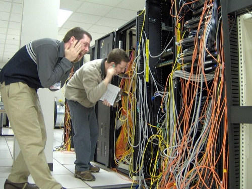
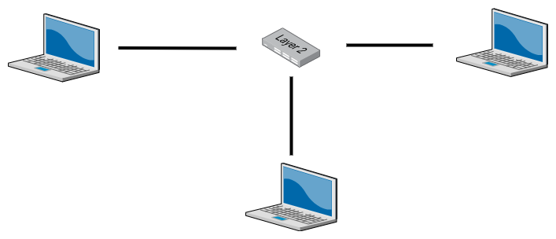
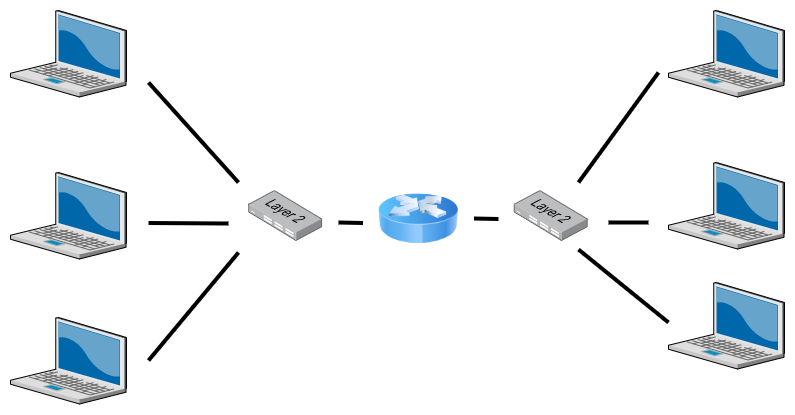

Container Networking p1
Understanding Error Messages
Who am I?
|
a metal fan 
|
a programmer 
|
a gamer 
|
The OSI model

Layer 1
The Physical Layer

Send ones and zeroes along a cable
Layer 2
The Data Link Layer
- Broadcast ethernet frames through switches
- Use MAC addresses to determine which frames to accept
Layer 3
The Network Layer
- Send IP packets through routers
- Use IP addresses to determine destination
- Use routing tables and subnet masks to determine route
Layer 4
The Transport Layer
- Just software on top of L3. No new hardware
- Send ICMP datagrams, UDP datagrams or TCP segments over IP
- UDP and TCP help us determine which application traffic is intended for by use of ports.